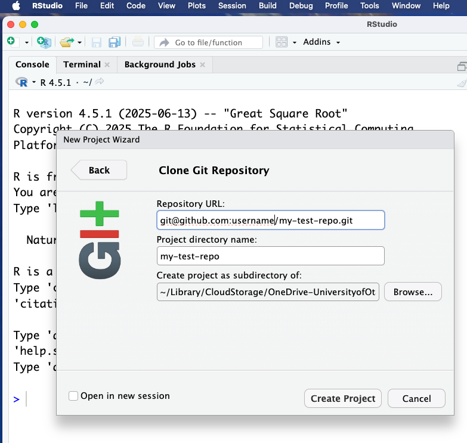

Getting Started
In this workshop we will need to work publicly (which is scary). We will create a public GitHub repo to work from, and in the first stages of this workshop we will generate a local file (for ease, we will create a basic .html file, but the concepts will be the same as for creating a word doc or pdf). We will then update this file to become a webpage which to function as an ‘about me’ page or to showcase your work. We recommend pinning this repo (which we will demonstrate) so that when someone visits your GitHub, they can view useful information about you.
Set up new public repo and open an R project
Go to GitHub, under “Repositories”, click New, give your new repo a name and description.
We won’t need this beyond today, so you can call it something like my-test-repo if you like. Make sure the “public” box is checked (this should occur by default).
Click on the green “Code” button, and copy the url for the repo.
From RStudio, go File > New Project > Version Control > Git. Paste in the repo URL, provide a project directory name, and select the location for the project. Click Create Project

First quarto doc
We can now create our first quarto (.qmd) file.
Under File > New File, click Quarto Document. Alternatively, use the button that looks like a blank page with a white “+” inside a green circle, and select Quarto Document. This will bring up a panel for creating a new quarto document:

On the left hand side we can see three options: Document, Presentation, and Interactive, and for each of these we can see there are different outputs. We can change these outputs later, but for now, select Document and HTML (this is the recommended format for working in). Give this document a title, something like “Basic About Page”. Before we create the document, we can see a couple of other options: Engine (leave this as Knitr), Editor (we will keep the visual editor box ticked), and then we can either click Create or Create Empty Document. For now, click on Create
This creates and opens a new document for us to write in. We can note three things:
First, at the very top of our document is something called the YAML header. The YAML header is information about the document, and is always contained within two sets of three dashes. The YAML header sets things like the document title, subtitle, author, and the output file, as well as a lot of extra information. We will cover the YAML header in more detail shortly.
Second, we can see this document is not blank - it comes pre-populated with some information about Quarto and how to run code (if we don’t want to see this information, we could use the ‘Create Empty Document’ button). These are often useful reminders when you are getting started, but once you are more familiar with Quarto you will delete these.
Third, this already looks like a document - that’s because we are currently in the ‘Visual’ editor mode. We can click on the ‘Source’ button to enter editor mode and see the markdown syntax.

You might also notice that within the YAML header there is a line selecting editor. While this says “visual” in both of the images above, we have manually over-ridden that with the inbuilt buttons in RStudio.
Exercise: Syntax (2 min)
Note three pieces of markdown syntax in the Source editor and how this translates into the Visual editor.
## - sets the Header level. Two # is “level 2”, three # is “level 3” (a smaller header). Note how these appear as headings in the Outline panel in RStudio.
** - when a word is surrounded by the double * it will become bold. Using a single * around a word will be interpreted as italics.
<> - are used to create a link. A word can also be embedded as a hyperlink by surrounding it with square brackets followed by the link itself in round brackets i.e., [this is the link text](https://this-is-the-URL.com)
We will cover more syntax shortly. Almost anything you would like to do can be achieved and is covered on the Quarto website.
If ## designates a header, and this workshop itself is written in Quarto, then why isn’t the line above coming up as a header?
Good catch! We have done something extra here called ‘escaping’. When you need to specify a character like a # or an * that is used for special syntax, you can add a \ (a backslash) first. This means that the next symbol will appear as-is in the document, rather than being translated as markdown.
Visual or Source Editor
You may chose to almost exclusively use the Source Editor, which has the advantage of helping you learn the markdown language. This is useful if you want to work on your documents while you are away from RStudio (for example, Visual Studio Code (VSCode) is a popular tool, which we are using to write this workshop, and it doesn’t have the same visual editor).
You may prefer to use the Visual Editor, which has the advantage of speed and convenience - you can use basic buttons to add bold or italic text, embed links, insert tables etc.,.
Today you can use one or the other, and we will try and demonstrate some of each.
Exercise: Visual and Source Editors (5 min)
To start: in the quarto document highlight everything outside of the yaml header (everything below the bottom three dashes) and delete it.
Move to the Visual Editor, and use the toolbar buttons to:
Insert a piece of Bold font.
Insert a piece of italic font.
Select and highlight a piece of text (using the </> button).
Add a heading above these bits of text you have just created (using the drop-down button called Normal to chose Header levels).
Add a numeric list with three different items on it.
Embed a link to the GitHub repo for this workshop: https://github.com/GenomicsAotearoa/reproducibility_with_git_and_quarto (use the chain-link button).
Finally, insert an example table with column headers and some example text.
Once you have completed these tasks, switch back and forth between the Visual and Source Editor to see how these different effects are done with markdown.
Other syntax options and notes:
We can also use superscript and subscript, by surrounding text with ^ or ~ respectively, and strikeout text using double ~~ on either side of the word.
| Markdown Syntax | Visual Output |
|---|---|
| super^script^ | superscript |
| sub~script~ | subscript |
| ~~strikeout~~ |
Paragraphs (and items in lists) need to be separated by an empty line. If there is no empty line between paragraphs, they will be interpreted as having a space between them.
If you are writing lists manually (i.e., not using the Visual editor option) you can either add unnumbered lists with an asterisk * or a hypen - or you can add numbered lists with any number followed by a fullstop at the start of the line.
- Note that any number works (try writing a bullet point list with
1. 2. 2. 4. 5.to start each line!). Quarto will automatically sort the numbers, which means you can number lists and then easily add additional points anywhere along the list.
- Sometimes an ‘Enter’ or ‘Return’ to make a new line is not enough. You may also need to add two spaces at the end of the top line, if the subsequent line is appearing on the preceding.
Save and Render document
Save your Quarto file (CTRL + S or CMD + S), give it a name if you have not already (e.g., getting-started.qmd) and save it into the directory you made earlier (mine is called my-test-repo).
Now back in RStudio, click the ‘Render’ button, which will simultaneously open up a Preview. You can change the Preview settings by clicking the settings button next to the Render button. The Preview can either be viewed in a new window or in a panel in RStudio.

Alternatively, you can preview and render a document on the command line (e.g., in terminal in RStudio, type):
quarto preview getting-started.qmdThis should also open a Preview window automatically in your browser.
As you make changes on your .qmd file, every time you save the document the Preview will update.
Hit CTRL + C back in terminal to exit preview mode.
Note:
quarto previewis great for live viewing, but we always need to generate our final output withquarto render. More on rendering later in this workshop!
YAML headers
At the top of each .qmd document we create, we will need a YAML header. YAML (Yet Another Markup Language or YAML Ain’t Markup Language) is placed at the very top of the document and is used to define the document metadata and output settings.
For a single document, like we have here, we will provide all of our information in this YAML header.
For a larger project, like a book or webpage we will provide a separate document with global information and the individual page YAML headers will be minimal.
One thing to note about YAML headers: they are fussy. Information within the YAML header must be stored between two lines each containing three dashes. When providing arguments you must provide both parts of the key-value pair, must use nesting where appropriate, and you must pay attention to indentation.
Document metadata
Arguments are provided in key-value pairs with a specific format.
Title
title: "A grand yet succint paper title"
Note that technically you do not need to put the title itself in quotation marks, but you do need them if you want to include things like a colon (otherwise, the YAML header will attempt to interpret the colon).
Date
The basic format for date is:
date: 29-05-25
There are a lot of different formats we can use for date formats:
MM/dd/yyyy
MM-dd-yyyy
MM/dd/yy
MM-dd-yy
yyyy-MM-dd
dd MM yyyy
MM dd, yyyy
YYYY-MM-DDTHH:mm:ssZThese options have a hierarchy. That means that Quarto will attempt to interpret the date in the order of formats above. In practice, this means that
date: 05/06/2025
Will be interpreted as May 6th, 2025.
For the date:
date: 13/07/2025
Quarto will first attempt to read it as month/date/year, but since that doesn’t work it will be intepreted as “The 7th day, 13 months from the start of 2025” - January 7th, 2026.
For this reason I strongly recommend using one of two options:
date: today The current local date.
date: last-modified The last date the input file was modified.
Click save, and watch your Preview update.
What impact does this have on reproducibility?
It’s important to include this information in even our most basic documents. Clear authoring is required for fair attribution and for directing readers in terms of who to contact.
Using a last-modified date format helps the reader to understand the timeline of the file, such as what public data or software versions were available at the time of last render.
Output format
When we want to output our document as a single format we use the basic key-value pair:
format: html
We can easily change the format after rendering to create a new document which duplicates the format e.g., you could generate a slideshow and a static pdf/html as a backup (this is recommended if you might be presenting on a shared machine).
Quarto can also render your documents into PDF, but you will need to first install LaTeX, if you do not already have it.
In r, you can install TinyTeX:
install.packages("tinytex")
tinytex::install_tinytex()
Or you can install full distribution like TeX Live (Linux), MacTeX (Mac), MikTeX (Windows).
Then you can set your YAML header to format: pdf and click render.
Exercise: Exploring revealjs (2 min)
Add a new heading in the .qmd document (either set the line to Header 2 in Visual Editor or type two # symbols) and call it “Section 3”. Add in more sections if you like!
Change the format of the output from html to revealjs and render.
Explore the revealjs (slideshow) format! ü§†
Useful features
There are other useful features we can control through the YAML header. Some examples:
toc: true will autogenerate a table of contents (for multi-page websites or documents).
bibliography: references.bib autogenerates a bibliography from a bib file.
csl: nature.csl sets the citation style.
number-sections: true adds auto-numbering for each section.
… and many more!
- See HTML Basics at quarto.org for ways to format the HTML output in the YAML header.
- See PDF Basics at quarto.org for ways to format the PDF output in the YAML header.
Summary
What have we covered?
Initiating a
.qmdfile.The Visual and Source Editor windows.
An introduction to the qmd syntax: italics, bold, hyperlinks, # headings.
The YAML header controls global options, such as author/date/document type metadata, as well as a whole series of additional formatting tools.
Creating a single output document (pdf, slideshow, standalone HTML) from the YAML header.